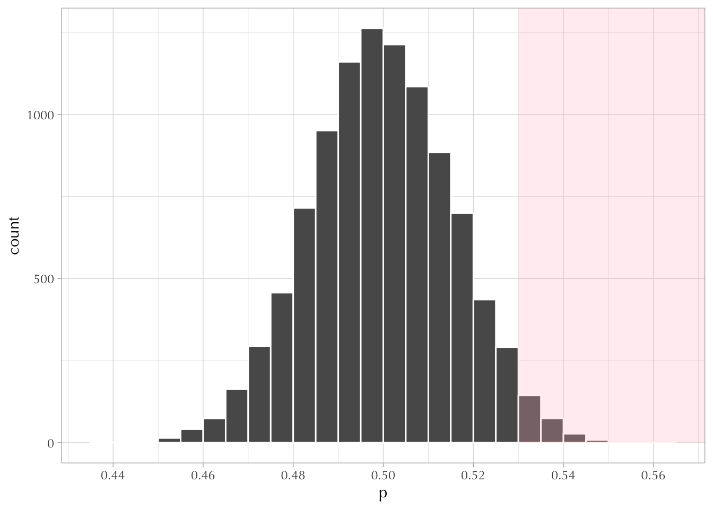
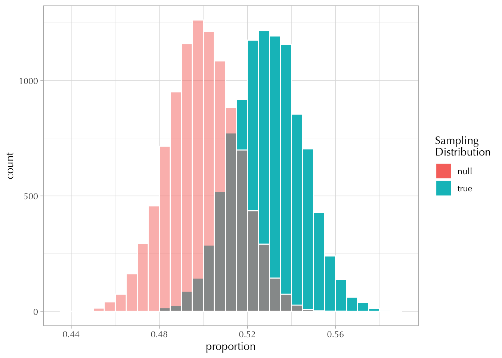
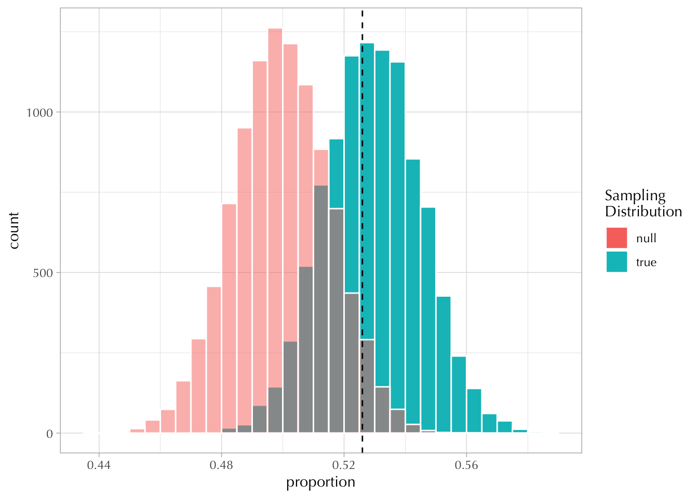
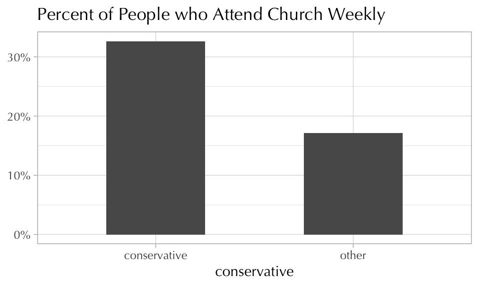
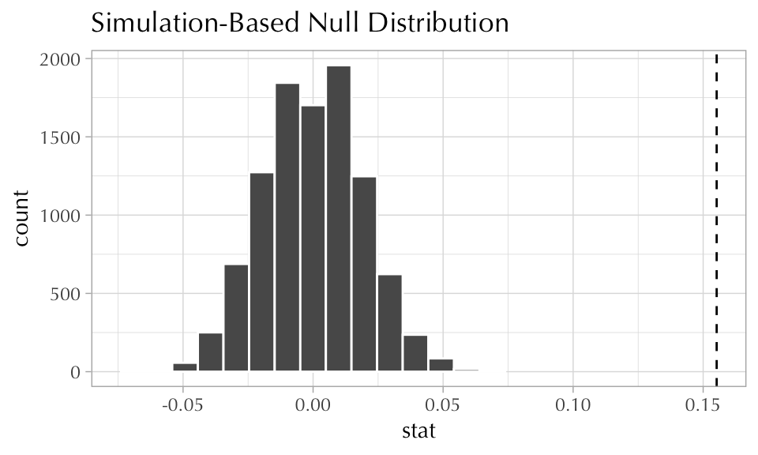
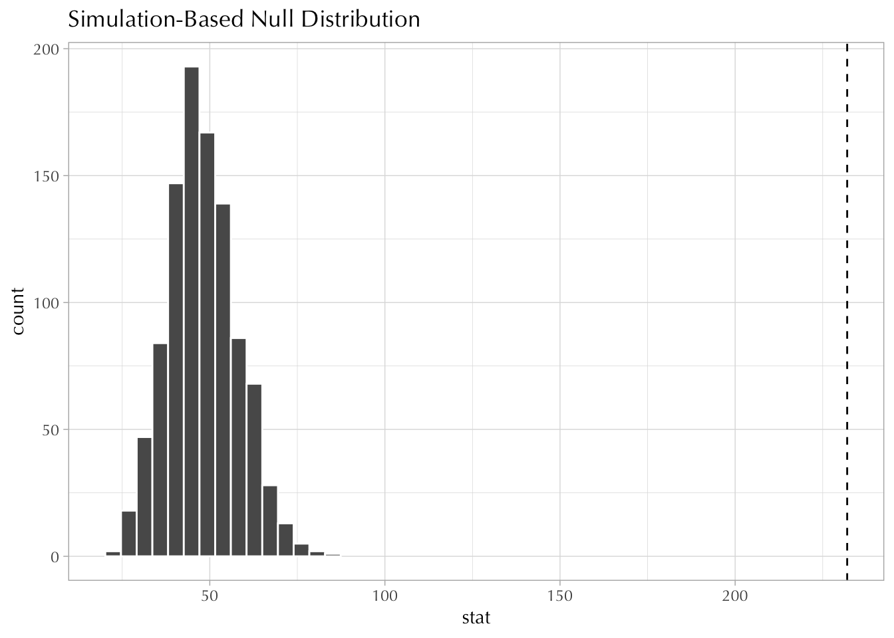
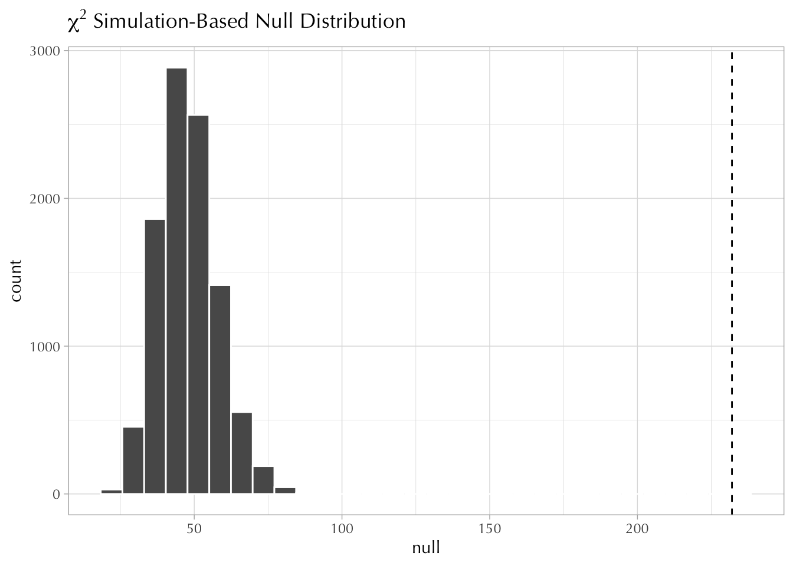

15 Solutions 6
15.1 Part I
15.1.1 Exercise
The answer is somewhat ambiguous because you have to make an assumption about the true population parameter. In this example I had been using \(p = 0.53\). In general, people tend to choose \(p = 0.5\) because it’s the most conservative estimate—i.e., it gives the maximum standard error.
You could have answered this with some algebra—i.e. by solving for \(n\) here:
\[ \begin{align} 0.05 > \sqrt{\frac{p (1-p)}{n}} && \longrightarrow && n > \frac{p(1-p)}{0.05^2} \end{align} \]
Or you could have answered this by playing around with the following simulation until you reached the numbers of size = 100.
[1] 0.04989916Here’s a plot:
Code
ggplot() +
xlim(10, 400) +
ylim(0, 0.18) +
geom_function(fun = \(x) sqrt(0.5^2 / x)) +
geom_hline(yintercept = c(0.05, 0.025), linetype = "dashed") +
geom_vline(xintercept = 100, linetype = "dashed") +
labs(y = "Standard Error", x = "Sample Size", title = "Standard Error, Sample Size, and Proportion")Note that halving the standard error requires multiplying the sample size by a factor of four!
15.1.2 Exercise
In this exercise, we had a sample size of 1000.
The sampling distribution for the null ( \(H_0\) ) of \(p = 0.5\) is as follows:
Code
S <- 1e4 ## number of simulated draws
poll_size <- 1000 ## sample size
draws <- rbinom(S, size = poll_size, prob = 0.50)
null <- draws / poll_size
tibble(p = null) |>
ggplot(aes(p)) +
geom_histogram(color = "white", boundary = 0.5, binwidth = 0.005) +
annotate("rect", xmin = 0.53, ymin = 0, xmax = Inf, ymax = Inf, fill = "pink", alpha = 1/4) +
scale_x_continuous(n.breaks = 10)
And the probability is computed as follows:
The prop_hat value was estimated at 0.513.
Note that the sample from which prop_hat was calculated was drawn from the “true” sampling distribution. The p-value is estimated to be 0.2, so we—mistakenly—failed to reject the “null hypothesis.” This mistake is usually called “Type II error” or “false negative.”
Take note of the shaded areas in the following graph:
Code
draws <- rbinom(S, size = poll_size, prob = 0.53)
true_dist <- draws / poll_size
g <- tibble(true = true_dist, null = null) |>
ggplot() +
geom_histogram(aes(true, fill = "true"), color = "white", boundary = 0.5, binwidth = 0.005) +
geom_histogram(aes(null, fill = "null"), color = "white", boundary = 0.5, binwidth = 0.005, alpha = 1/2) +
labs(x = "proportion", fill = "Sampling\nDistribution")
g
In this question, setting the confidence interval as \(\alpha = 0.05\) means that we will compare the estimated proportion to whatever value produces a tail area probability of 0.05. I fiddled around with the null distribution and decided that this value was 0.526.
[1] 0.0459[1] 0.5259887
Note that by setting the confidence level to 0.05, we are also inadvertently setting the probability of a “false negative.”
It’s almost 40%
People don’t usually think about type II error because it is outside their control—i.e., it requires for us to know the “true” value. But that doesn’t mean we shouldn’t carefully think about such things!
15.1.3 Exercise
If you didn’t get the same answer, then you made some kind of weird mistake!
15.1.4 Exercise
Using math to answer this is OK.
But this is how I would have liked you to answer this question:
Code
[1] 0.09995086[1] 0.03129886Using the formula:
15.2 Part II
Fetching: https://gss.norc.org/documents/stata/2018_stata.zipCode
Rows: 2,235
Columns: 3
$ sex <fct> male, male, female, male, female, female, male, female, male,…
$ attend <dbl> 5, 2, 6, 8, 4, 7, 7, 0, 4, 5, 0, 3, 0, 7, 1, 0, 4, 5, 2, 7, 1…
$ polviews <dbl> 6, 5, 4, 7, 3, 4, 5, 4, 6, 4, 4, 3, 2, 5, 2, 6, 2, 4, 6, 6, 4…15.2.1 Exercise
Just describe the variables!
15.2.2 Exercise
Code
conservative 0 1
0 82.87% (1,243) 17.13% (257)
1 67.35% (495) 32.65% (240)Code
d |>
group_by(conservative) |>
mutate(conservative = if_else(conservative == 1L, "conservative", "other")) |>
summarise(percent = mean(weekly)) |>
ggplot(aes(conservative, percent)) +
geom_col(width = 1/2) +
scale_y_continuous(labels = scales::percent_format(1)) +
labs(y = NULL, title = "Percent of People who Attend Church Weekly")
Code
Using `level = 0.95` to compute confidence interval.Code
obs_diff <- mean(d$weekly[d$conservative == 1L]) - mean(d$weekly[d$conservative == 0L])
d_summary <- d |>
group_by(conservative) |>
summarize(weekly_percent = mean(weekly)) |>
pivot_wider(names_from = conservative, values_from = weekly_percent, names_prefix = "conservative_")
d_summary <- d_summary |>
mutate(obs_diff = conservative_1 - conservative_0)
d_summary$obs_diff[1] 0.1551973Code
Response: weekly (numeric)
Explanatory: conservative (factor)
Null Hypothesis: independence
# A tibble: 10,000 × 2
replicate stat
<int> <dbl>
1 1 -0.0131
2 2 -0.00293
3 3 0.0153
4 4 -0.000898
5 5 0.0194
6 6 -0.0110
7 7 0.0214
8 8 -0.0232
9 9 0.00721
10 10 0.0133
# ℹ 9,990 more rows
15.2.3 Exercise
Yes.
15.2.4 Exercise

Good luck!
Pleas note that most people think of themselves as “moderate” and that very few of them attend religious services. There is, however, a big chunk of people that identify as conservative ( \(n = 104\) ) that attend every week.
15.2.5 Bonus
Rows: 2,235
Columns: 6
$ sex <fct> male, male, female, male, female, female, male, female, m…
$ attend <fct> 5, 2, 6, 8, 4, 7, 7, 0, 4, 5, 0, 3, 0, 7, 1, 0, 4, 5, 2, …
$ polviews <fct> 6, 5, 4, 7, 3, 4, 5, 4, 6, 4, 4, 3, 2, 5, 2, 6, 2, 4, 6, …
$ female <int> 0, 0, 1, 0, 1, 1, 0, 1, 0, 1, 1, 0, 1, 1, 1, 1, 1, 0, 1, …
$ weekly <int> 0, 0, 0, 1, 0, 1, 1, 0, 0, 0, 0, 0, 0, 1, 0, 0, 0, 0, 0, …
$ conservative <int> 1, 1, 0, 1, 0, 0, 1, 0, 1, 0, 0, 0, 0, 1, 0, 1, 0, 0, 1, …Response: attend (factor)
Explanatory: polviews (factor)
# A tibble: 1 × 1
stat
<dbl>
1 232.Warning in stats::chisq.test(x, y, ...): Chi-squared approximation may be
incorrect
Pearson's Chi-squared test
data: d$attend and d$polviews
X-squared = 231.99, df = 48, p-value < 2.2e-16Code

\(\chi^2\) test without the infer package:
polviews
attend 1 2 3 4 5 6 7
0 69 128 77 248 66 74 16
1 5 17 18 52 20 14 0
2 9 30 37 130 41 36 8
3 7 27 28 104 23 35 7
4 3 11 21 53 23 23 9
5 9 18 19 74 31 23 8
6 3 10 11 25 13 20 5
7 12 24 34 125 51 104 25
8 5 12 10 35 15 24 21Code
1 2 3 4 5 6 7
0 37.009396 84.02953 77.355705 256.63893 85.84966 107.08456 30.032215
1 6.877852 15.61611 14.375839 47.69396 15.95436 19.90067 5.581208
2 15.884564 36.06577 33.201342 110.15034 36.84698 45.96107 12.889933
3 12.609396 28.62953 26.355705 87.43893 29.24966 36.48456 10.232215
4 7.805817 17.72304 16.315436 54.12886 18.10694 22.58568 6.334228
5 9.934676 22.55660 20.765101 68.89128 23.04519 28.74541 8.061745
6 4.748993 10.78255 9.926174 32.93154 11.01611 13.74094 3.853691
7 20.469799 46.47651 42.785235 141.94631 47.48322 59.22819 16.610738
8 6.659508 15.12036 13.919463 46.17987 15.44787 19.26890 5.404027[1] 231.9905Code
## null distribution
null <- replicate(1e4, {
ob_draw <- table(attend = sample(d$attend), polviews = sample(d$polviews))
sum((ob_draw - expected)^2 / expected)
})
tibble(null) |>
ggplot(aes(null)) +
geom_histogram(color = "white") +
geom_vline(linetype = "dashed", xintercept = sum((observed - expected)^2 / expected)) +
labs(title = latex2exp::TeX("$\\chi^2$ Simulation-Based Null Distribution"))`stat_bin()` using `bins = 30`. Pick better value with `binwidth`.
Back to the interpretation:
Code
as_tibble(observed - expected, n = "x") |>
ggplot(aes(attend, polviews, fill = x^2)) +
geom_tile(color = "white", linewidth = 1.5, show.legend = FALSE) +
geom_text(aes(label = round(x, 2))) +
scale_fill_gradient(low = "white") +
theme_minimal(base_line_size = 0, base_family = "Optima") +
labs(title = "Observed - Expected Counts")